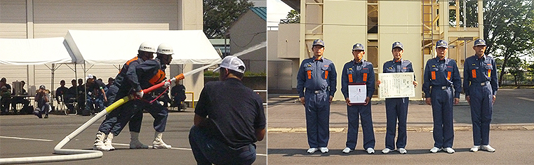

第27回 埼玉県消防操法大会
第27回 埼玉県消防操法大会■日時： 平成24年8月25日（土） 8時15分開会
■会場： 埼玉県消防学校（鴻巣市）
■出場消防団（番号は出場順位）
| ポンプ車の部(午前) | 小型ポンプの部（午後） | ||
| 1 | 坂戸市消防団 | 1 | 飯能消防団 |
| 2 | 熊谷市消防団 | 2 | 狭山市消防団 |
| 3 | 所沢市消防団 | 3 | 吉川市消防団 |
| 4 | 川口市消防団A | 4 | 小鹿野町消防団 |
| 5 | 久喜市久喜消防団A | 5 | 神川町消防団 |
| 6 | 和光市消防団 | ||
| 7 | 加須市消防団 | ||
| 8 | 川口市消防団B | ||
| 9 | 春日部市消防団 | ||
| 10 | 朝霞市消防団 | ||
■大会結果
ポンプ車の部 優勝 所沢市消防団
小型ポンプの部 優勝 小鹿野町消防団 準優勝 飯能消防団 第3位 狭山市消防団

飯能消防団は小型ポンプの部で出場し、接戦の末、惜しくも2位という結果となりました。
選手たちは飯能消防団の代表として、また埼玉西部支部の代表として本当に頑張り、本番では人々を感動させる操法を披露しました。訓練教官ならびに連日の訓練をサポートしていただいた団員の皆様、ご協力ありがとうございました。また、応援していただいた全ての方々に感謝します。ありがとうございました。
なお、本大会の小型ポンプの部で優勝した小鹿野町消防団にあっては、平成24年10月7日（日）に東京都江東区の東京臨海広域防災公園で開催される「第23回全国消防操法大会」に埼玉県代表として出場します。御健闘をお祈りします。